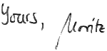

Dear Visitor!
My name is Moritz Beller. I am doing a PhD on TestRoots in the Software Engineering Research Group at TU Delft.
This is a website about me and what I do. Feel free to contact me or follow my updates on Twitter as @Inventitech.

News
About Me
I shortly present my academic and personal interests here. If you are curious and want to know more, just ask me. I have a strong reputation of not biting people.
Researcher
As a researcher, my interest lies in the broad domain of Software Engineering, with a tendency towards its practical applications and empirical studies on software quality and how to improve it. In the TestRoots project, which is the focus of my PhD, I do this by researching Developer Testing. However, I am also excited about static code analysis, which includes code reviews.
Quality Enthusiast
I am an absolute enthusiast in what I do. During my studies, I already focused on Software Quality. I also was a core committer of the open-source software quality analysis toolkit ConQAT. Consequently, I have a focus on writing maintainable, easy-to-understand source code.
Student
I studied at Techincal Unviersity of Munich, Germany, and Linköpings Universitet, Sweden. On top of Software Engineering as my main subject, I chose a research-oriented Master education. I took Sports and Medicine as my minor fields of study.
Sportsman*
In my leisure time, I enjoy sports. After years of competitive table tennis, I have started with Olympic weight lifting. Besides these indoor activities, I like the mountains, especially now that I live in the Netheralnds. In the winter for skiing, and in the summer for hiking and a bit of mountainbiking. From time to time, I go for a run (not really my favoured sport, though).
Languages
Having a classicist's background (Latinum and Graecum), I like language and speaking in general. From my abroad studies, I have a particular interest in Swedish culture. Besides I like to pay attention to the little language details that matter.
*) I wished … ;)
Publications
| Conference Paper | Sebastiano Panichella, Annibale
Panichella, Moritz Beller, Andy
Zaidman, Harald
Gall: The Impact of Test Case Summaries on Bug Fixing Performance: An Empirical Investigation in 38th International Conference on Software Engineering (ICSE), Austin (USA), 2016. Cite it (BibTeX entry) • Presentation • Acceptance Rate 19% (101/530) |
| Workshop Paper | Moritz Beller, Igor Levaja,
Annibale Panichella, Georgios Gousios,
Andy Zaidman: How to Catch ’Em All: WatchDog, a Family of IDE Plug-Ins to Assess Testing in 3rd International Workshop on Software Engineering Research and Industrial Practice (SER&IP 2016), Austin (USA), 2016. Cite it (BibTeX entry) • Presentation • Acceptance Rate 32% (10/31) |
| Conference Paper | Moritz Beller, Radjino Bholanath, Shane McIntosh, Andy Zaidman: Analyzing the State of Static Analysis: A Large-Scale Evaluation in Open Source Software in 23rd IEEE International Conference on Software Analysis, Evolution, and Reengineering (SANER), Osaka (Japan), 2016. Cite it (BibTeX entry) • Presentation • Acceptance Rate 37% (52/140) |
| Magazine Article | Moritz Beller: Test oder Nichttesten, das ist hier die Frage in Eclipse Magazin 1.16, Frankfurt am Main (Germany), 2016. |
| Conference Paper | Moritz Beller, Georgios Gousios, Annibale Panichella, Andy Zaidman: When, How, and Why Developers (Do Not) Test in Their IDEs in 10th Joint Meeting of the European Software Engineering Conference and the ACM SIGSOFT Symposium on the Foundations of Software Engineering (ESEC/FSE), Bergamo (Italy), 2015. Cite it (BibTeX entry) • Presentation • Acceptance Rate 25% (74/291) |
| Conference Paper Best Paper Award |
Moritz Beller, Andy Zaidman, Andrey Karpov: The Last Line Effect in 23rd International Conference on Program Comprehension (ICPC), Early Research Achievements (ERA) track, Florence (Italy), 2015. Cite it (BibTeX entry) • Presentation • Acceptance Rate 32% (7/22) |
| Conference Paper | Moritz Beller, Georgios Gousios, Andy Zaidman: How (Much) Do Developers Test? in 37th International Conference on Software Engineering (ICSE), New ideas and Emerging Results (NIER) track, Florence (Italy), 2015. Cite it (BibTeX entry) • Presentation • Acceptance Rate 18% (25/135) |
| Magazine Article | Moritz Beller: How much testing is enough? in Jax Magazine 41 ‐ The TESTING Special, Berlin (Germany), 2014. |
| Magazine Article | Moritz Beller: Wie viel Testen ist genug? in Eclipse Magazin 1.15, Frankfurt am Main (Germany), 2014. |
| Conference Paper | Moritz Beller, Alberto Bacchelli, Andy Zaidman, Elmar Jürgens: Modern Code Reviews in Open-Source Projects: Which Problems Do They Fix? in 11th Working Conference on Mining Software Repositories (MSR), Hyderabad (India), 2014. Cite it (BibTeX entry) • Presentation • Acceptance Rate 34% (29/85) |
| Master's Thesis | Moritz Beller: Quantifying Continuous Code Reviews at TU München (Germany), 2013. |
| Workshop Paper | Moritz Beller, Elmar Jürgens: How Strict is Your Architecture? in 14th Workshop on Software Reengineering, Bad Honnef (Germany), 2012. |
| Bachelor's Thesis | Moritz Beller: Static Validation of ConQAT Architecture Descriptions at TU München (Germany), 2011. |
Service
I am a member of the PhD concuil of the Institute for Programming research and Algorithmics.
Program Commitee (PC)
I am honoured to have served in the PC of ...
- SCAM 2015 (15th IEEE International Working Conference on Source Code Analysis and Manipulation), tool paper track.
- SANER 2017 (24th IEEE International Conference on Software Analysis, Evolution, and Reengineering), tool paper track.
Reviewing
I was a reviewer for ...
- MSR 2014 (11th Working Conference on Mining Software Repositories)
- MSR 2016
- SCAM 2014 (Source Code Analysis and Manipulation Working Conference)
- SANER 2015 (International Conference on Software Analysis, Evolution, and Reengineering)
- SANER 2016
- ESEC/FSE 2015 (European Software Engineering Conference/ACM SIGSOFT Symposium on the Foundations of Software Engineering)
- EMSE 2015 (Empirical Software Engineering)
- JSS 2016 (Journal of Systems and Software)
Teaching
I was a teaching assistant for ...
- Software Testing and Quality Engineering, prof. Arie van Deursen, 2014
- Software Engineering Methods, dr. Alberto Bacchelli, 2014
Supervising
I had the privilege to (co-)supervise ...
- the bachelor end project of Jean de Leeuw, Liam Clark, and Chak Shun Yu on developing an iOS app for flight risk assessment.
- a group of five students in the context project (together with Andy Zaidman).
- Niels Spruit's Master Thesis on how developers debug, 2015-2016.
- Igor Levaja's Master Thesis on Developer Testing, 2015-2016.
- Radjino Bholanath's Master's Thesis Analyzing the State of Static Analysis: A Large-Scale Evaluation in Open Source Software, 2014-2015.
- the 3-day Master Kickoff 2014 of the EWI faculty in Bunnik.
Invited Talks and Presentations
I have given these presentations ...
- Guest lecture: When, How, and Why Developers (Do Not) Test in Ali Mesbah's Software Verification and Testing at the University of British Columbia (UBC), Vancouver (Canada), 22.2.2016.
- Manual And Automated Static Analysis in Open Source Software: Prevalence and Usage at Microsoft Research, 2015, Redmond (USA), 8.2.2016.
- Guest lecture: Empirical Studies in Software Engineering: 3 Examples in Alberto Bacchelli's Mining Software Repositories course, 2015, Delft (The Netherlands), 7.12.2015.
- When, How, and Why Developers (Do Not) Test in Their IDEs at the Project Quality Day, EclipseCon Europe 2015, Ludwigsburg (Germany), 4.11.2015.
- How (Much) Do Developers Test? at the Software Industry Conference, Bussum (Netherlands), 15.3.2015. Slides (Slideshare)
- Wie (Viel) Testen Entwickler? at Eclipse Democamp, Kassel (Germany), 9.12.2014.
- TestRoots: Aus vergangenen Test-Failures lernen at TNG Techday, Munich (Germany), 28.11.2014.
- Modern Code Reviews in Open-Source Projects: Which Problems Do They Fix? at IPA Fall Days, Oisterwijk (Netherlands), 6.11.2014.
- Test Analytics: How Much Testing Is Enough? in BOF-Session, EclipseCon Europe 2014, Ludwigsburg (Germany), 28.10.2014.
Curriculum Vitae
Employment |
|
| 1/2014–today | Doctoral Candidate, TU Delft, Netherlands |
Education |
|
| 10/2011–10/2013 | M.Sc. Computer Science, Technische Universität München, With Distinction |
| 8/2010–3/2011 | Erasmus Abroad Studies, Linköpings Universitet, Sweden |
| 9/2008–9/2011 | B.Sc. Computer Science, Technische Universität München |
| 9/1999–6/2008 | University-Entrance Diploma, Celtis-Gymnasium, Schweinfurt |
Experience |
|
| 10/2011–03/2013 | Student Temp, CQSE GmbH, München. Software Engineer and Architect |
| 1/2011–3/2011 | Student Temp, Sick IVP A/B, Linköping, Sweden. Research & Development, Team “Vision” |
| 2/2009–9/2009 | Student Researcher, Chair for Software and Systems Engineering, TU Munich |
| 7/2007–8/2007 | Trainee, SICK AG, Waldkirch. Central Department Research & Development |
Interests |
|
| Languages | German (native), English (fluent), Swedish (intermediate), Latin, Greek |
| Hobbies | Skiing, Hiking, Reading and Writing, Travelling |
Extra-curricular Activities |
|
| Scholarship | Scholarship Holder, Wittmansche Stipendienstiftung and Nicolaus Fonds (2012-2013) |
| Journalism | Author for “unikat,” Munich’s student magazine (since 2010) |
| “OOP 2013” | Student volunteer and attendee at the symposium “OOP 2013” in Munich, where “Software meets Business” |
| Cross-cultural Trainings | Student evaluator of the Deutscher Akademischer Austauschdienst (DAAD) for “eu-community.eu” in Brussels and Bonn, 2011 Speaker at the TUM Career Service’s event “Go Sweden” in Munich, 2011 |
| “BWM 2007” | German national contest for maths: 1st price |
| “BWInf 2006” | German national contest for computer science: 2nd price |
| “BWInf 2004” | 1st price, fifthbest result nation-wide |
| “BWInf 2003” | 2nd price in first round, 2nd price in second round; 2nd best competitor at the age of 15 |
| “Invent a Chip 2005” | Contest organized by the “German Association for Electrical, Electronic and Information Technologies” (VDE): 3rd place for the design and implementation of an AES-based encryption adapter as a silicon chip |
| “Jugend forscht 2005” | German contest for young scientists: Winner of regional contest with “x-View – development of a technically advanced video beamer”; 3rd place at Bavarian contest, special price for “Radio and video technology” |
Links
- TestRoots
- The project I work on at TU Delft (I created the website).
- Abstract Formatter
- I do not like to manually format the abstracts of my papers (and you normally do it a couple of times per paper), hence I developed the Abstract Formatter.
- 4momo.de
- This is my first website, which I started back in 2003. Apart from several smaller projects, I mainly ran a self-developed blog system there (PHP), which I continued till mid-2006.
- ConQAT
- The open-source quality analysis toolkit developed at TU Munich that I was an active committer from 2009 until 2013 (Java).
- ESV Freimann
- My former Weightlifting club.
- Unknown Horizons
- Unknown Horizons is an open source Anno 1602-like game that I contributed to as a university project (Python).
- unikat
- The Munich student magazine I wrote for.
Contact
To get in touch with me, simply write me an email, call me or drop by my office.
Moritz Marc BellerOffice HB 08.290
Software Engineering Research Group, TU Delft
Mekelweg 4
NL-2628 CD Delft
m.m.belltudelft.nl (that is, m.m.<my_surname>@tudelft.nl).